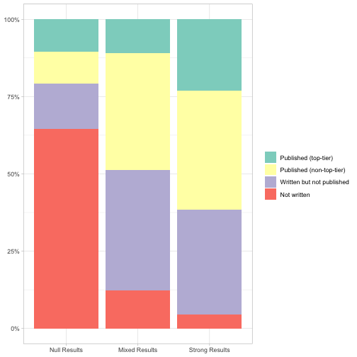
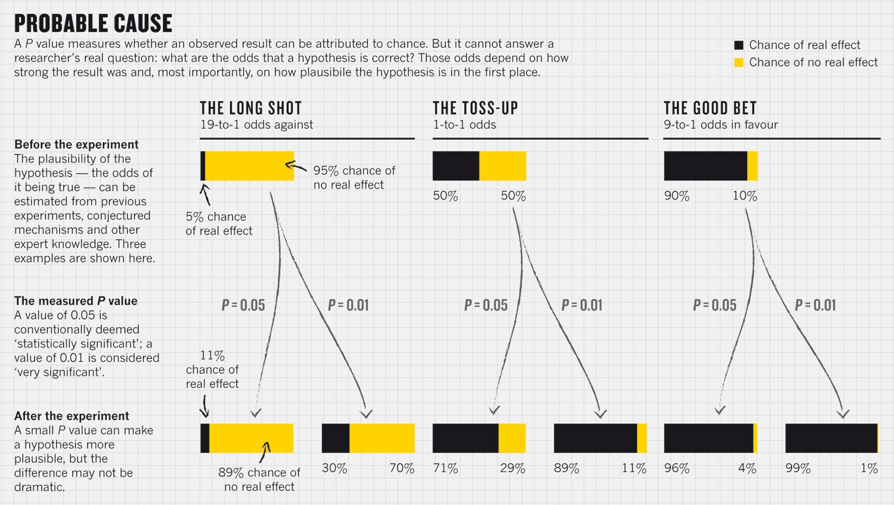

Open Science & Reproducibility
Adam Altmejd
May 2nd, 2019
- The replication crisis
- The problem
- What to do about it
Part 1
—
The Replication Crisis


Science/Nature Replications
Replication Heterogeneity

Why Should we Care?
For science:
“non-reproducible single occurrences are of no significance to science”
For our careers:
“I have spent nearly a decade working on the concept of ego depletion […] The problem is that ego depletion might not even be a thing.”
Impact

The Goal
Produce reproducibile research that can be replicated easily.
- Reproduction: Re-analyze with push of a button.
- Direct Replication: internal validity
- Conceptual Replication: external validity
Part 2
—
The Problem
- Publication Bias
- Forking (p-hacking)
- Low Statistical Power
- Scientific Misconduct

Publication Bias
Published research is not representative.
- Hard to assess knowledge
- Incentive to p-hack
The File Drawer

What is a P-value?
Under the null, how likely is the observed data?
Says nothing about assumptions+hypothesis validity.

Forking, P-hacking, Fishing, Researcher Degrees of Freedom


P-Hacking in Economics

Forking Paths
Even with a pre-stated hypothesis and no conscious p-hacking, each design choice is a fork in the path towards a finished paper.
If observed significance influences these choices, p-values are meaningless.
Forking Checklist

Low Statistical Power
- Even with registries, subgroups can get small
- Empirical Economics: median power 18%
- Type-M/S errors:

Scientific Misconduct
- Uncommon, but not as rare as you think
- Hard to fix, need strong norms

Part 3
— What can you do?
Study Registration
Public demonstration of precedence
Pre-registration — Before accessing data
- combats file-drawer
- protects against forking
- fends off reviewer no. 2
OSF Registration

- OSF.io registration by freezing a project.
- Or: AEA RCT Registry, AsPredicted, EGAP Registry
Pre-Analysis Plan
Pick a path through the garden and stick to it.
Focus: sample selection, estimation
Also: motivation, literature
Could be: your paper before results
(maybe extension of grant proposal)
Register a Pre-Analysis Plan
- Ideal: registration outputs final results,
will not work with empirical research. - Vague PAP is better than nothing.
- Consider putting X% of data in lock-box.
PAP Example 1

PAP Example 2

PAP Example 3

Pre-analysis Plans: A Stocktaking
- 195 development PAPs (AEA, EGAP, -2016)
- PAPs specify:
- Clear hypothesis (90%)
- > 5 hypotheses (58%)
- Statistical models (68%)
- Attrition (25%)
- Outliers (8%)
In 93 papers:
- 25% of PAP hypotheses not reported
- 18% additional tests
(82% do not mention PAP adherence) - Why? No policing equilibrium.
I’ve gotten an absurd number of requests for sensitivity analyses for strictly pre-specified empirical work. The existing norm appears to keep me from looking for unexpected results while providing no protection from readers or reviewers who want to dig through the data trying to kill off empirical results they don’t agree with.
Specification Curve
If you cannot pre-pick one analysis, study all.
Birth Order
Self-Reported Intellect

Birth Order
Positive Reciprocity

Another curve
What is the signaling value of GPA?

A Reproducibility-Enhancing Research Workflow
Data Management
- Never edit raw input data directly
- Keep processed data in separate folder

Reproducible Code
- Self-documenting code: naming, structure, formatting
- Each code file has separate purpose
- Use comments when needed
- Use functions/programs, never write same code twice
- Literate programming in RMarkdown
Example
rowmeans <- function(x, y) {
# Calculate pairwise means of numeric input vectors.
# Input: two vectors of equal length; "x", "y"
# Output: one vector "out" of means.
if (length(x) != length(y)) stop("x, y have unequal lengths")
# Create empty vector to fill with rowmeans
out <- vector("numeric", length = length(x))
for (i in seq_along(x)) {
# For each row, calculate mean of x and y and store in z.
out[i] <- mean(c(x[i], y[i]))
}
return(out)
}Version Control
- Annotated history of changes
- Documents progress in research
- Keep track of latest version
- Collaborate efficiently, reconcile conflicts
- Only works with text files, not Word
Version Control in Github
- Git is opensource VCS, hosted by Github
- One repository per project
- Changes tracked through commits
- Link to OSF, freeze for registration
Github Desktop
Data Sharing
- Without data, reproduction is impossible
- Never compromise privacy
- Alternatives: retrieval protocol, data store
Institutional Change
- use results-blind review,
- require study registration,
- require data publication,
- require reproducible code.
Readings
- Transparent and Reproducible Social Science Research (Christensen, Freese, and Miguel 2019)
- Code and Data (Gentzkow and Shapiro 2014)
- Best Practices Manual (Christensen 2018)
Thank you!
References
Altmejd, Adam. 2017. “Pre Analysis Plan: Effects of Education Choice.” October 3, 2017. https://osf.io/rj6t7/.
Bateson, Melissa, Daniel Nettle, and Gilbert Roberts. 2006. “Cues of Being Watched Enhance Cooperation in a Real-World Setting.” Biology Letters 2 (3): 412–14. https://doi.org/10.1098/rsbl.2006.0509.
Brodeur, Abel, Mathias Lé, Marc Sangnier, and Yanos Zylberberg. 2016. “Star Wars: The Empirics Strike Back.” American Economic Journal: Applied Economics 8 (1): 1–32. https://doi.org/10.1257/app.20150044.
Camerer, Colin F., Anna Dreber, Felix Holzmeister, Teck-Hua Ho, Jürgen Huber, Magnus Johannesson, Michael Kirchler, et al. 2018. “Evaluating the Replicability of Social Science Experiments in Nature and Science Between 2010 and 2015.” Nature Human Behaviour 2 (9): 637–44. https://doi.org/10.1038/s41562-018-0399-z.
Carney, Dana R., Amy J. C. Cuddy, and Andy J. Yap. 2010. “Power Posing: Brief Nonverbal Displays Affect Neuroendocrine Levels and Risk Tolerance.” Psychological Science 21 (10): 1363–8. https://doi.org/10.1177/0956797610383437.
Caruso, Eugene M., Kathleen D. Vohs, Brittani Baxter, and Adam Waytz. 2013. “Mere Exposure to Money Increases Endorsement of Free-Market Systems and Social Inequality.” Journal of Experimental Psychology. General 142 (2): 301–6. https://doi.org/10.1037/a0029288.
Christensen, Garret. 2018. “Manual of Best Practices in Transparent Social Science Research.” https://github.com/garretchristensen/BestPracticesManual/blob/master/Manual.pdf.
Christensen, Garret, Jeremy Freese, and Edward Miguel. 2019. Transparent and Reproducible Social Science Research: How to Do Open Science. 1st ed. University of California Press Books. https://www.ucpress.edu/book/9780520296954/transparent-and-reproducible-social-science-research.
Coffman, Lucas C., and Muriel Niederle. 2015. “Pre-Analysis Plans Have Limited Upside, Especially Where Replications Are Feasible.” Journal of Economic Perspectives 29 (3): 81–98. https://doi.org/10.1257/jep.29.3.81.
Earp, Brian D., Jim A. C. Everett, Elizabeth N. Madva, and J. Kiley Hamlin. 2014. “Out, Damned Spot: Can the ‘Macbeth Effect’ Be Replicated?” Basic and Applied Social Psychology 36 (1): 91–98. https://doi.org/10.1080/01973533.2013.856792.
Franco, Annie, Neil Malhotra, and Gabor Simonovits. 2014. “Publication Bias in the Social Sciences: Unlocking the File Drawer.” Science 345 (6203): 1502–5. https://doi.org/10.1126/science.1255484.
Gelman, Andrew, and John Carlin. 2014. “Beyond Power Calculations: Assessing Type S (Sign) and Type M (Magnitude) Errors.” Perspectives on Psychological Science 9 (6): 641–51. https://doi.org/10.1177/1745691614551642.
Gelman, Andrew, and Eric Loken. 2013. “The Garden of Forking Paths: Why Multiple Comparisons Can Be a Problem, Even When There Is No "Fishing Expedition" or "P-Hacking" and the Research Hypothesis Was Posited Ahead of Time.” http://www.stat.columbia.edu/~gelman/research/unpublished/p_hacking.pdf.
Gentzkow, Matthew, and Jesse M. Shapiro. 2014. “Code and Data for the Social Sciences: A Practitioner’s Guide.”
Inzlicht, Michael. 2016. “Reckoning with the Past.” Michael Inzlicht. February 29, 2016. http://michaelinzlicht.com/getting-better/2016/2/29/reckoning-with-the-past.
Ioannidis, John P. A., T. D. Stanley, and Hristos Doucouliagos. 2017. “The Power of Bias in Economics Research.” The Economic Journal 127 (605): F236–F265. https://doi.org/10.1111/ecoj.12461.
John, Leslie K., George Loewenstein, and Drazen Prelec. 2012. “Measuring the Prevalence of Questionable Research Practices with Incentives for Truth Telling.” Psychological Science 23 (5): 524–32. https://doi.org/10.1177/0956797611430953.
Kidwell, Mallory C., Ljiljana B. Lazarević, Erica Baranski, Tom E. Hardwicke, Sarah Piechowski, Lina-Sophia Falkenberg, Curtis Kennett, et al. 2016. “Badges to Acknowledge Open Practices: A Simple, Low-Cost, Effective Method for Increasing Transparency.” PLOS Biology 14 (5): e1002456. https://doi.org/10.1371/journal.pbio.1002456.
Klein, Richard A., Kate A. Ratliff, Michelangelo Vianello, Reginald B. Adams, Štěpán Bahník, Michael J. Bernstein, Konrad Bocian, et al. 2014. “Investigating Variation in Replicability: A "Many Labs" Replication Project.” Social Psychology 45 (3): 142–52. https://doi.org/10.1027/1864-9335/a000178.
Klein, Richard A., Michelangelo Vianello, Fred Hasselman, Byron G. Adams, Reginald B. Adams, Sinan Alper, Mark Aveyard, et al. 2018. “Many Labs 2: Investigating Variation in Replicability Across Samples and Settings.” Advances in Methods and Practices in Psychological Science 1 (4): 443–90. https://doi.org/10.1177/2515245918810225.
Munafò, Marcus R., Brian A. Nosek, Dorothy V. M. Bishop, Katherine S. Button, Christopher D. Chambers, Nathalie Percie du Sert, Uri Simonsohn, Eric-Jan Wagenmakers, Jennifer J. Ware, and John P. A. Ioannidis. 2017. “A Manifesto for Reproducible Science.” Nature Human Behaviour 1 (1): 0021. https://doi.org/10.1038/s41562-016-0021.
Northover, Stefanie B., William C. Pedersen, Adam B. Cohen, and Paul W. Andrews. 2017. “Artificial Surveillance Cues Do Not Increase Generosity: Two Meta-Analyses.” Evolution and Human Behavior 38 (1): 144–53. https://doi.org/10.1016/j.evolhumbehav.2016.07.001.
Nuzzo, Regina. 2014. “Scientific Method: Statistical Errors.” Nature News 506 (7487): 150. https://www.nature.com/news/scientific-method-statistical-errors-1.14700.
Ofosu, George K, and Daniel N Posner. 2019. “Pre-Analysis Plans: A Stocktaking.”
Popper, Karl. 2005. The Logic of Scientific Discovery. Routledge. https://www.taylorfrancis.com/books/9781134470020.
Ranehill, Eva, Anna Dreber, Magnus Johannesson, Susanne Leiberg, Sunhae Sul, and Roberto A. Weber. 2015. “Assessing the Robustness of Power Posing: No Effect on Hormones and Risk Tolerance in a Large Sample of Men and Women.” Psychological Science 26 (5): 653–56. https://doi.org/10.1177/0956797614553946.
Rohrer, Julia M., Boris Egloff, and Stefan C. Schmukle. 2017. “Probing Birth-Order Effects on Narrow Traits Using Specification-Curve Analysis.” Psychological Science 28 (12): 1821–32. https://doi.org/10.1177/0956797617723726.
Simonsohn, Uri, Joseph P. Simmons, and Leif D. Nelson. 2015. “Specification Curve: Descriptive and Inferential Statistics on All Reasonable Specifications.” SSRN Scholarly Paper ID 2694998. Rochester, NY: Social Science Research Network. https://papers.ssrn.com/abstract=2694998.
Steegen, Sara, Francis Tuerlinckx, Andrew Gelman, and Wolf Vanpaemel. 2016. “Increasing Transparency Through a Multiverse Analysis.” Perspectives on Psychological Science 11 (5): 702–12. https://doi.org/10.1177/1745691616658637.
Strack, Fritz, Leonard L. Martin, and Sabine Stepper. 1988. “Inhibiting and Facilitating Conditions of the Human Smile: A Nonobtrusive Test of the Facial Feedback Hypothesis.” Journal of Personality and Social Psychology 54 (5): 768–77. https://doi.org/10.1037/0022-3514.54.5.768.
Wagenmakers, E.-J., T. Beek, L. Dijkhoff, Q. F. Gronau, A. Acosta, R. B. Adams, D. N. Albohn, et al. 2016. “Registered Replication Report: Strack, Martin, & Stepper (1988).” Perspectives on Psychological Science 11 (6): 917–28. https://doi.org/10.1177/1745691616674458.
Wicherts, Jelte M., Coosje L. S. Veldkamp, Hilde E. M. Augusteijn, Marjan Bakker, Robbie C. M. van Aert, and Marcel A. L. M. van Assen. 2016. “Degrees of Freedom in Planning, Running, Analyzing, and Reporting Psychological Studies: A Checklist to Avoid P-Hacking.” Frontiers in Psychology 7. https://doi.org/10.3389/fpsyg.2016.01832.
Zhong, Chen-Bo, and Katie Liljenquist. 2006. “Washing Away Your Sins: Threatened Morality and Physical Cleansing.” Science 313 (5792): 1451–2. https://doi.org/10.1126/science.1130726.